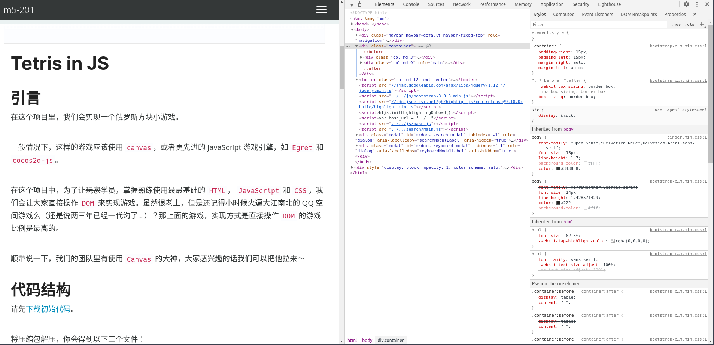
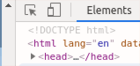

天下前端一大抄
我们的鼓励大家，用创新的思维去设计，用“抄袭”的方法去实现。
（本篇内容仅代表一部分人的观点，也许不完全正确，欢迎讨论！）
导论
在设计一个前端页面以及功能的时候，我们要发挥创造力；但是在着手制作的时候，我们鼓励新手玩家去“抄袭”。
我们说的“抄袭”是这两层意思：
- 按需截取别人写好的局部布局
- 使用开源的工具，包括框架、组件和第三方库等
如果你是新手，或者像笔者一样对 Web 前端不是很熟悉，适当的“抄袭”可以大大加快你的学习、开发速度，避免很多常见问题。
比如，你不知道怎么做一个导航框，或者不知道怎么把弹窗做成你想要的效果。
你可以先回忆一下在什么地方看到过其它网站的类似功能，然后去将它“抄”过来。
（当然，对于比较通用或比较常见的问题，你可以运用面向谷歌编程 的技巧，更高效地得到解决方案。）
注意，请不要把别人的网站整个复制过来，把关键图片和文字替换成自己的，然后进行发布。这样就成了真正意义上的抄袭，被踢出创造营不说，还会引来道德上甚至法律上的问题。
那么应该怎么做呢？请往下看。
复现页面元素
随便打开一个主流浏览器（如 Chrome 和 Firefox），右键点击页面，点击 检查元素（inspect），可以看到屏幕边上出现一个面板。点击面板最上方的第一个标签（通常会叫 元素（Elements）），可以看到整个页面的 HTML 代码。

你也可以直接点击最左上角的图标

然后把鼠标放在页面上，它会自动告诉你每个东西的标签是什么。
定位到你想要实现的功能（有时候这也需要一点经验），然后将目标 HTML 代码复制到本地。在本地打开网页，可能会和原来的网页不太一样，因为你还需要把 CSS 样式也复制下来。
你可以先看一下标签上的 id 以及 class 名，在原页面的元素中使用 CTRL + f 搜索对应的 CSS 样式，复制到你的 HTML 文件里，直到它和原网页看起来差不多。
P.S. 我们推荐在复制的时候，大概阅读一下你复制的内容，不懂的话最好查一下每一句话是什么意思，这样会进步很快的。
开源工具
其实很多时候，这些代码不是网站作者自己写出来的，而是他们使用工具生成出来的。下面例举几个比较好用的工具：
特效生成器
如果你记不住各种 CSS 的属性，除了现用现查之外，最好的办法就是使用工具自动生成。
这个链接 可以让你像做 PPT 那样，方便地生成并测试你想要的效果。
或者，直接搜一下 CSS generator，然后挑选你喜欢的工具。
生成完毕后，复制到你的 CSS 代码中即可。
Bootstrap
Bootstrap 是一堆用 CSS 写好的样式（以及一些用来控制组件的 JavaScript）。
你只需要在你的 HTML 元素上，打上特定的 class 标签，就能让样式发挥效果了。
具体的使用方法如下：
1. 在 Bootstrap 的 Get started 页面找到引用的方法（只需要在你的 HTML 文件对应位置加入几个 <link></link> 和 <script></script> 就行）。这个过程实际上告诉了页面，去因特网的某个地址把他们写好的 CSS 和 JavaScript 文件拿过来用。
2. 在 Docs 页面找到自己喜欢的组件或样式，加到自己代码里。
个人认为，Bootstrap 中最好用的，当属 Layout 下的 Columns。它提供了很清晰的排版方式，并且允许你同时适配电脑端与手机端。